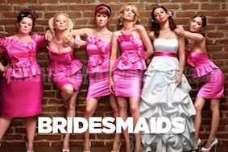
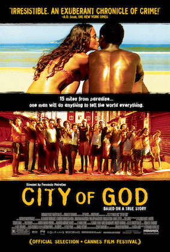
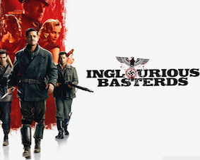

"After working over 6 years in public accounting, I realized, accounting is not the career I would be passionate for. I quit my job and continued my pursuit to become a web developer."
Follow my journey with Le WagonCreated a recipe book for cocktail mixing, photo uploading and customizable doses to each cocktail instance.
Co-developer for an experience booking service. A one-week project for attended coding bootcamp taking on the project manager role for the group.
|  |
2012 - Bridesmaid"Annie (Kristen Wiig) is a single woman whose own life is a mess, but when she learns that her lifelong best friend, Lillian (Maya Rudolph), is engaged, she has no choice but to serve as the maid of honor. Though lovelorn and almost penniless, Annie, nevertheless, winds her way through the strange and expensive rituals associated with her job as the bride's go-to gal. Determined to make things perfect, she gamely leads Lillian and the other bridesmaids down the wild road to the wedding." |
|---|---|
|  |
2002 - City of God"In the poverty-stricken favelas of Rio de Janeiro in the 1970s, two young men choose different paths. Rocket (Alexandre Rodrigues) is a budding photographer who documents the increasing drug-related violence of his neighborhood. José "Zé" Pequeno (Leandro Firmino da Hora) is an ambitious drug dealer who uses Rocket and his photos as a way to increase his fame as a turf war erupts with his rival, "Knockout Ned" (Seu Jorge). The film was shot on location in Rio's poorest neighborhoods." |
|  |
2009 - Inglourious BasterdsIt is the first year of Germany's occupation of France. Allied officer Lt. Aldo Raine (Brad Pitt) assembles a team of Jewish soldiers to commit violent acts of retribution against the Nazis, including the taking of their scalps. He and his men join forces with Bridget von Hammersmark, a German actress and undercover agent, to bring down the leaders of the Third Reich. Their fates converge with theater owner Shosanna Dreyfus, who seeks to avenge the Nazis' execution of her family." |
This page has been coded during the FullStack program @LeWagon.
© 2018 Katrina Ariola. All Rights Reserved | SF, CA